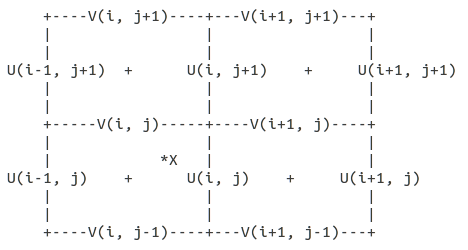
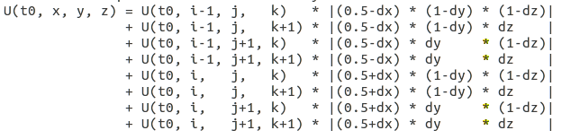
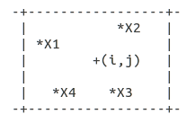

4 FAQ
4.1 Java Heap Space
In case of memory issues, run Ichthyop in the Terminal as follows:
java -jar -Xms1g -Xmx16g ichthyop_X.Y.Z.jarThe first argument provides the initial heap memory while the second argument provides the maximum size of the heap memory. Replace 16g by any number.
You need to make sure that your computer has at least the memory indicated by the Xmx parameter
4.2 What to do when Ichthyop does not manage my ocean dataset
Ichthyop developers cannot manage all the different ocean datasets that exist. First, there are too many of them which rely on different assumptions, such as grid layout, vertical coordinates, etc.
Therefore, the Ichthyop developers have decided to first focus on the most used datasets, i.e. NEMO, MARS, ROMS and ocean datatasets that are stored on regular grid.
If your model does not belon to the list, one possibility is to do a bit of pre-processing, in order to convert your input files to a regular, depth-based ocean grid. Different tools can help you with that, such as the XESMF Python package.
4.3 What to do when Ichthyop suddenly fails to launch ?
Situation: without apparent reason, Ichthyop fails to launch, either from GUI or command line. It looks like it starts and crashed instantly.
Solution: delete Ichthyop persistence files (the files that store the information to restart your ichthyop session as it was when you last closed it) In Windows environment such files are gathered in a hidden directory ~/AppData/Local. In this folder delete the ichthyop directory of the previmer/ichthyop directory. In Linux or Mac environement delete the ~/.ichthyop folder. Try to run Ichthyop again.
4.4 How to launch Ichthyop from command line ?
First you have to open a command prompt window on your computer.
For Linux or Mac users open a new Terminal (type Terminal in the Application search bar or the Finder if you are unsure how to open a terminal).
For Windows users, click on the start button > All programs > Accessories > Command Prompt (read more)
From the command prompt windows you need to change the current directory (by default your home directory) to the Ichthyop directory. For instance
cd projects/ichthyop/ichthyop-3.2
or
cd Mes\ Documents/Ichthyop/ichthyop-3.2Assuming that in the first case that your ichthyop folder is in directory projects/ichthyop/ichthyop-3.2 and in the second case in directory MesDocuments/Ichthyop/ichthyop-3.2.
List the folder content to check that you are in the right directory : type dir in Widows and ls in Linux or Mac environment.
Launch Ichthyop, with UI, from command line:
java -jar ichthyop-3.2.jarLaunch Ichthyop, without UI, from command line:
java -jar ichthyop-3.2.jar cfg/your_configuration_file.xmlWith your_configuration_file.xml the name of the XML configuration files that you first created from the UI and that you saved in the cfg/ folder.
4.5 What are the different coastline behaviours in Ichthyop?
First you may want to read {numref}spatial-int
Coastline behaviour manages what must be done in the event that the move of a particle takes it inland (which might happen because the simulation time step is not small enough or because there is some additional movement, such as diffusion or swimming, etc.)
Ichthyop offers four different behaviours at coastline:
- NONE: Ichthyop ignores the fact that it is land and just carries on moving the particle around.
- BEACHING: Ichthyop does move the particle inland but “kill” it. From now onward the particle is out of the simulation.
- BOUNCING: the coastline acts as a billard edge and the particle will bounce as a billard ball in the events that the move would take it beyond the coastline. The particle bounces back as much as it would penetrate inland.
- STANDSTILL: the particle gives up on the move that would take it inland and just wait until next time step for trying an other move.
(spatial-int)=
4.6 How does spatial interpolation work in Ichthyop?
A particle in Ichthyop only knows about its environment what is provided by the outputs of the hydrodynamic model. Such information, for instance the zonal and meridional current velocities, are usually provided on an Arakawa C-grid, every U-point and V-point respectively.
Here is the 2D scheme of cells (i, j) bottom left, (i+1, j) bottom right, (i, j+1) top left and (i+1, j+1) top right.

X(x, y, z)Let’s see how the interpolation works for both zonal and meridional velocities. The question we ask is what is the value of U and V at particle location?
We have i=round(x), j=truncate(y) and k=truncate(z), dx=x-i, dy=y-j, dz=z-k
Let’s call t, the current time of the simulation, and t0 and t1 the values of the time NetCDF variable bounding t: t0 <= t < t1
We first interpolate the model velocity field at t0:

This large expression can be narrowed down to:
U(t0, x, y, z) = SUM( U(t0, i+ii-1, j+jj, k+kk) * |(0.5-ii-dx) * (1-jj-dy) * (1-kk-dz)| , ii in [0,1], jj in [0,1], kk in [0,1] )with i=round(x), j=truncate(y), k=truncate(z), dx=x-i, dy=y-j, dz=z-k
Similarly, the meridional velocity can be expressed as:
V(t0, x, y, z) = SUM( U(t0, i+ii, j+jj-1, k+kk) * |(1-ii-dx) * (0.5-jj-dy) * (1-kk-dz)| , ii in [0:1], jj in [0:1], kk in [0:1] )with i=truncate(x), j=round(y), k=truncate(z), dx=x-i, dy=y-j, dz=z-k
It means that the velocity, either zonal or meridional, at particle location is the result of a trilinear interpolation of the height (four above, four below) surrounding velocities in the grid.
Same with U(t1, x, y, z) and V(t1, x, y, z)
Let’s take frac = (t - t0) / (t1 - t0). Then we have
U(t, x, y, z) = (1 - frac) * U(t0, x, y, z) + frac * U(t1, x, y, z)
V(t, x, y, z) = (1 - frac) * V(t0, x, y, z) + frac * V(t1, x, y, z)This is the general case when all the surrounding cells are in water. Now what happened if the particle is in a cell adjacent to the coast? Let’s say that in our example cell(i+1,j) and cell(i+1, j+1) are land. Basically the interpolation is limited to the four (two above and two below) closest surrounding velocity points:
U(t0, x, y, z) = SUM( U(t0, i+ii-1, j, k+kk) * |(0.5-ii-dx) * (1-dy) * (1-kk-dz)| , ii in [0,1], kk in [0,1] )
V(t0, x, y, z) = SUM( U(t0, i, j+jj-1, k+kk) * |(1-dx) * (0.5-jj-dy) * (1-kk-dz)| , jj in [0:1], kk in [0:1] )In order to determine whether a particle is close to the coastline, Ichthyop proceeds in two steps: it first determines in which quater of the cell the grid point is located. Then it checks wether or not the three adjacent cells to this quater are in water.

X1 will be considered as “close to coast” if any of cells (i,j+1) (i-1,j) (i-1,j+1) is on land.
X2 will be considered as “close to coast” if any of cells (i,j+1) (i+1,j) (i+1,j+1) is on land.
X3 will be considered as “close to coast” if any of cells (i,j-1) (i+1,j) (i+1,j-1) is on land.
X4 will be considered as “close to coast” if any of cells (i,j-1) (i-1,j) (i-1,j-1) is on land.
4.7 How does Ichthyop manage time ?
Time management is tricky to handle because on the computer side a given time is usually expressed as a number of seconds elapsed since a time origin (e.g. 13629116520 seconds elapsed between 1900/01/01 00:00 and 2014/09/04 09:42), whereas the user expects to read time in a human readable format (e.g. 2014/09/04 09:42).
Ichthyop is no different: the program itself only understands a time as a number of seconds elapsed since a time origin, just like the hydrodynamic datasets ROMS, MARS, NEMO, etc. and time displayed in the console or the GUI uses a human readable format. Since time in the hydrodynamoc dataset is expressed as a number of seconds elapsed since a time origin, Ichthyop must be able to convert a human readable time (for example the time of begining of the simulation) into a number of seconds, so that it can compare this given time value to the time vector of the hydrodynamic dataset and interpolate the velocity fields at the correct time step. The key issue is how to convert a human readable time into a number of seconds elapsed since a time origin ?
In order to do so, we need a calendar that basically details how many days (a day is always considered as a 24h period) are there in each month for each year. Since Ichthyop has to read some variables from the hydrodynamic dataset at a given time, we must make sure that Ichthyop uses the same calendar than the hydrodynamic dataset.
The default calendar used by Ichthyop is the Gregorian calendar (the most widely used civil calendar), the one we use for our daily life. The time origin is set by default at 1900/01/01 00:00. This value can be changed in the configuration file, in the {guilabel}Time section: tick the {guilabel}Show hidden parameters checkbox, change parameter {guilabel}Type of calendar to Gregorian calendar and adjust the value of parameter {guilabel}Origin of time so that it matches the origin of time set in the hydrodynamic dataset. Such information usually comes as an attribute of the time variable in the NetCDF output files of the hydrodynamic dataset.
Nonetheless some hydrodynamic simulations run with a different calendar than the Gregorian calendar. So far, Ichthyop includes an other calendar that we called the Climatology calendar. It is a commonly used calendar for climatological simulations, a year is divided in 12 months of 30 days each. In order to select this calendar from the editor of configuration, go to the {guilabel}Time section, tick the {guilabel}Show hidden parameters checkbox and select the Climatology calendar for parameter {guilabel}Type of calendar. The origin of time for the climatology calendar is set at 01/01/01 00:00 and cannot be changed.
Let’s sum up the steps involved in the time management, using the example of the time of beginning of the simulation:
- user provides a time for the beginning of the simulation 2014/09/04 09:42 ;
- user sets up the calendar to be used in Ichthyop, the same one that has been used in the hydrodynamic dataset, e.g. Gregorian calendar with origin of time 1900/01/01 00:00 ;
- Ichthyop converts 2014/09/04 09:42 into a number of seconds using the user-defined calendar, 13629116520 seconds ;
- Ichthyop scans the time variable of the hydrodynamic dataset and identifies that time value 13629116520 falls in between time step 5 and 6 of the hydrodynamic time step (time step 5 and 6 are just an example) ;
- Ichthyop can perfom the time integration of the velocity fields between time steps 5 and 6 of the hydrodynamic dataset and starts advecting the particles.
We provide a very simple utiliy programs in the Time converter repository, that illustrates how Ichthyop performs the time conversion, given a calendar and a time of origin.
Last bu not least: what if your hydrodynamic dataset uses an other calendar than Gregorian or Climatology calendars? Two options:
- Contact the developpers and ask how much work would it be to include your calendar in Ichthyop ?
- Select an existing calendar that is the most similar to yours and trick Ichthyop by providing a human readable time that you know it will be converted in the correct time value for the hydrodynamic dataset (thanks to the Time converter utility program).
4.8 How does Ichthyop interpolate the hydrodynamic dataset in time ?
Let’s say that the hydrodynamics output dataset is archived with a 5 days time step and Ichthyop runs with a 1 hour time step.
Let’s call tn a given time index in the hydrodynamic dataset and tnp1 the following one. And let’s call Tr a variable from the dataset (either current velocity, temperature, free surface elevation, etc.). Let’s call time the time variable of the hydrodynamic dataset, always expressed in seconds elapsed from a given origin.
Ichthyop does a linear interpolation to estimate the value of Tr at any given time between time(tn) and time(tnp1). For t, a given time index such as time(t) >= time(tn) and time(t) < time(tnp1), we have :
Tr(t) = (1 - x) * Tr(tn) + x * Tr(tnp1)with x = ( time(t) - time(tn) ) / ( time(tnp1) - time(tn) )
4.9 Why do I get warning “CFL broken for W 1.208” ?
CFL stands for Courant–Friedrichs–Lewy condition. It is a necessary condition for stability while solving the equation of movement in Ichthyop.
We want at all time (U * dt) / dX stricly inferior to 1 with U the velocity (vertical in this specific case) and dX the move. The warning informs you that the CFL condition has been broken for the vertical velocity and that it might jeopardize the numerical stability of the model.
Try to decrease the time step (dt) in your configuration file (Time > Time step), let’s say divide it by two. As explained in the configuration editor, an acceptable estimation for dt could be dt = 0.7 * dGrid / Umax with dGrid the average length of the grid cells and Umax the order of magnitude of the fastest current velocities in the hydrodynamic model (locally and punctually the vertical velocities can be intense). Nonetheless the smaller the better and as long as decreasing the time step does not slow down too much your simulations, you should always go for a smaller value that the previous estimation.